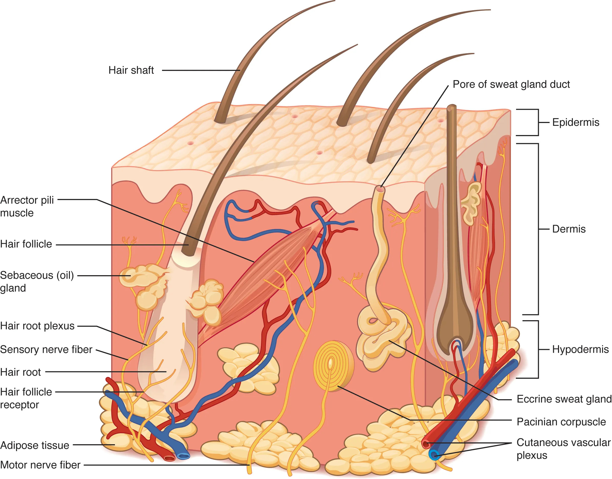

皮肤是人体最大的器官，由表皮和真皮构成，借皮下组织与深部组织相连。皮肤具有保护、感觉、调节体温、排泄和吸收等功能。
表皮为复层扁平上皮，无血管，营养靠真皮渗透。从深到浅分为五层：
表皮细胞从基底层不断分裂，逐渐向上推移、角化、脱落，整个更新周期约28天。

真皮由致密结缔组织构成，含丰富的血管、神经和附属器。分两层：
真皮的弹性纤维使皮肤有弹性，胶原纤维使皮肤有韧性。两者共同决定皮肤的机械性能，随年龄增长而退化，导致皮肤松弛起皱。
皮下组织即浅筋膜，由疏松结缔组织和脂肪组织构成，连接皮肤与深部结构，有保温、储能、缓冲作用。皮下注射即将药液注入此层。